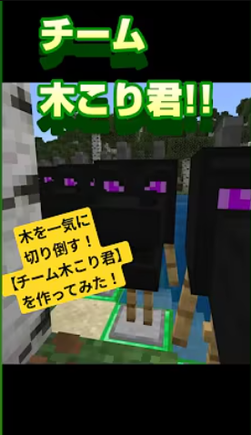

【チーム木こり君】を作ってみた！！
【チーム木こり君】を作ってみた！！
こんにちは、こっぴーです！
今回は、森を一気に伐採してくれる便利な「チーム木こり君」を作ってみたのでご紹介します🌳✂️
🌲 チーム木こり君とは？
防具立てを設置して「スタートコマンド」を実行するだけで、周囲の 木材や葉っぱなどを一気に消し飛ばしてくれる、森の整理にぴったりな仕組みです！
森林伐採のコマンドはちょっと怖い印象もあるかもしれないので、「チーム木こり君」という名前で可愛くカバーしてみました（笑）
🛠 使用するコマンド
🔁 リピート／常時実行 のコマンドブロックに以下を設置：
execute as @e[type=armor_stand,tag=start] at @s unless block ~~~ log unless block ~~~ air run tp @s ~~1~
execute as @e[type=armor_stand,tag=start] at @s if block ~~-1~ air run tp @s ~~-1~
execute as @e[type=armor_stand,tag=start] at @s if block ~~~ air run tp @s ^^^0.1
execute as @e[type=armor_stand,tag=start] at @s if block ~~-1~ diamond_block run kill @s
execute as @e[type=armor_stand,tag=start] at @s run fill ^^^1 ^^50^1 air replace log
execute as @e[type=armor_stand,tag=start] at @s run fill ^^^1 ^^50^1 air replace leaves
execute as @e[type=armor_stand,tag=start] at @s run fill ^^^1 ^^50^1 air replace birch_log
execute as @e[type=armor_stand,tag=start] at @s run fill ^^^1 ^^50^1 air replace birch_leaves
execute as @e[type=armor_stand,tag=start] at @s run fill ^^^1 ^^50^1 air replace wildflowers
execute as @e[type=armor_stand,tag=start] at @s run fill ^^^1 ^^50^1 air replace leaf_litter🟢 スタート用のコマンド：
/tag @e[type=armor_stand] add start※ポイント：
すべての防具立てが「木こり君」になってしまうのを防ぐには、@e[type=armor_stand,name=start] のように、名前付きで指定するのがおすすめです。
✅ こんなときに便利！
- 森を更地にして建築したいとき
- 重くなったワールドの軽量化をしたいとき
- 材料集めのあと片づけに！
🎮 実際の動きが見たい方へ
YouTubeでも動作の様子を紹介しています！（※リンクは別途挿入）
動画を観る🔚 まとめ
「チーム木こり君」は、森を一掃したいときの超便利アイテムです！
みなさんもぜひ、マイクラの整地作業に導入してみてくださいね🌟